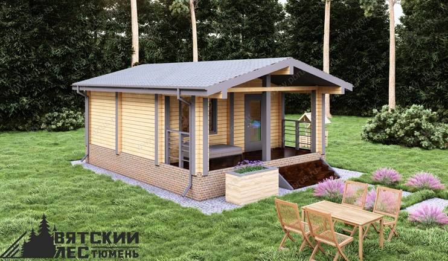

ДОМА И БАНИ ИЗ БРУСАДом из бруса.
Дом из бруса.
Выберите свой.
Готовые и индивидуальные проекты домов из бруса. Обсудим планировку, комплектацию и строительство на вашем участке.
Подобрать проект
ДОМА И БАНИУ каждого дома
У каждого дома
свой сценарий.
Компактный одноэтажный дом, два этажа для семьи или отдельная баня. Начнём с вашей задачи и подберём проект под неё.
Обсудить мой дом